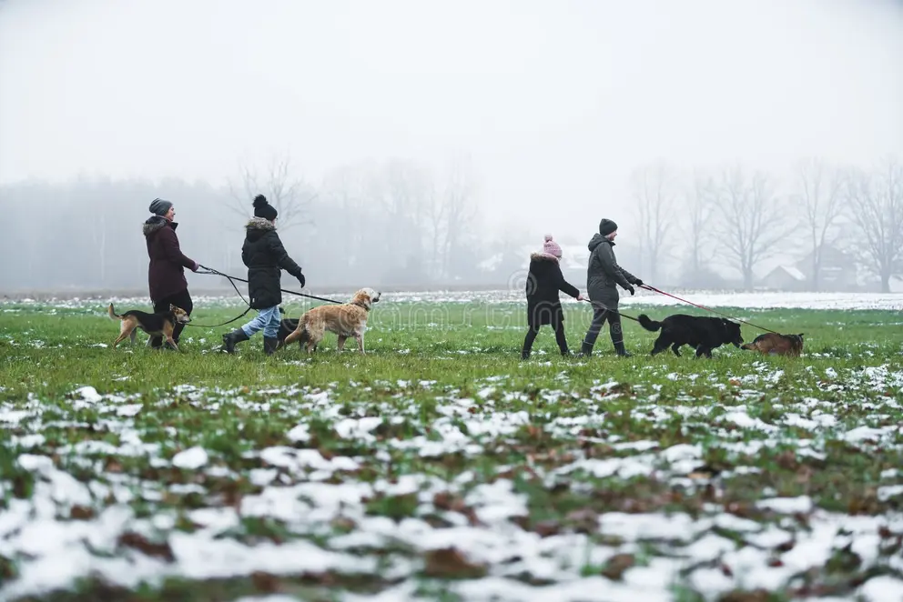
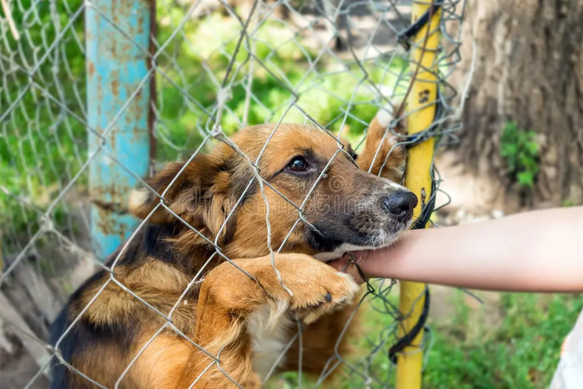

Manada conecta empresas con refugios, hogares de tránsito y organizaciones de rescate. Validamos necesidades reales, coordinamos cada aporte y mostramos la evidencia de su impacto.

Sumá a tu empresa a una red confiable: te acercamos necesidades validadas y te mostramos a dónde llegó cada aporte.

Contanos qué necesitás. Nosotros lo validamos, lo conectamos con empresas dispuestas a colaborar y coordinamos la entrega.
Cada refugio u hogar cuenta qué necesita, y lo verificamos con criterios claros, iguales para todos.
Conectamos esa necesidad con empresas dispuestas a colaborar y organizamos cómo y cuándo se entrega.
Documentamos la entrega y su resultado, para que cada aporte pueda seguirse de punta a punta.
Información clara y compromisos cumplidos
Cada aporte se sigue hasta su entrega
Menos fricción entre quien ayuda y quien necesita
Relaciones recurrentes, no acciones aisladas
Evidencia de lo que cambió con cada aporte
Manada no existe para "repartir donaciones": existe para construir confianza y coordinación entre quienes quieren ayudar y quienes necesitan recursos.Misión, visión y valores
Mirá las preguntas frecuentes o escribinos directamente: te respondemos seas empresa, refugio u hogar de tránsito.